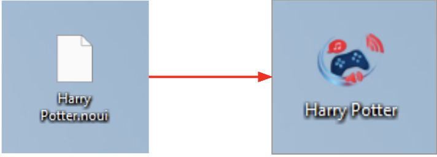

.noui Filetype
The .noui filetype is a custom filetype of this project, that contains all the data required to play a game. It is a unit that can be easily transferred between users, and allows them to play the game, given they have the No-GUI player installed on their machine.
The filetype is a zipped folder, with a custom file extension. This allows the operating system to differentiate the .noui game from other files on the user's system. The more interesting part about this filetype is registration with the operating system.
Even though the file extension differentiates the file, the operating system still does not know how to handle the .noui games correctly. A feature to register a file type has been implemented using the winreg python library.
When a file is opened by double-clicking, Windows goes through Windows Registry, which is among other things, a database of all file associations. The actual registration of the file type is done in module register_file_type.
The shell open command ran by the operating system is registered:
# 1. Register the ProgID and its shell open command
with winreg.CreateKey(winreg.HKEY_CURRENT_USER, rf"Software\Classes\{prog_id}") as key:
winreg.SetValue(key, "", winreg.REG_SZ, description)
with winreg.CreateKey(winreg.HKEY_CURRENT_USER, rf"Software\Classes\{prog_id}\shell\open\command") as key:
winreg.SetValue(key, "", winreg.REG_SZ, f'"{exe_path}" "%1"')Note the last line, defining the positional command line argument, %1 stands for the path to the .noui game. This is the reason why the main method takes in an optional command line argument:
import sys
from src.game_player.gui import playerPage
if __name__ == "__main__":
if len(sys.argv) > 1:
# when .noui file type opened directly
playerPage.run(sys.argv[1])
else:
# when the engine ran on its own
playerPage.run()Then, the file icon is registered:
# 2. Optionally register an icon
if icon_path:
with winreg.CreateKey(winreg.HKEY_CURRENT_USER, rf"Software\Classes\{prog_id}\DefaultIcon") as key:
winreg.SetValue(key, "", winreg.REG_SZ, icon_path)And the association with the file type is created:
# 3. Associate the file extension with the ProgID
with winreg.CreateKey(winreg.HKEY_CURRENT_USER, rf"Software\Classes\{extension}") as key:
winreg.SetValue(key, "", winreg.REG_SZ, prog_id)After a successful file type registration, the file type should move from an unrecognised icon to the icon set by the command.
